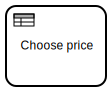
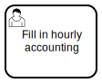
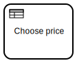
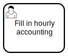
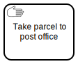

DMN, user tasks and forms
Until now, we have focused on only one BPMN activity type:  service task. But there are more. Let’s forget service tasks for the next example, and dive into  business rule task and  user task instead. They play well together.
service task. But there are more. Let’s forget service tasks for the next example, and dive into  business rule task and  user task instead. They play well together.
Collect facts, make decisions
Here’s an imaginary process for selling bus tickets:
Driver looks into passenger to collect facts about them. Passenger may show some proofs to be eligble for discount.
Based on the collected facts, driver decides, into which price group the passenger belongs to.
Driver charges the passenger and delivers the ticket.
{kind=link}
In this naive interpretation of the bus ticket sale process, fact collection is modeled as user task and the decision made from the facts as business-rule-task. The rest of the tasks are left  manual for now.
bus-ticket-sale.bpmn
Automating repeatable decisions
DMN stands for Decision Model and Notation. It is a standard approach for describing and modeling repeatable business decisions, and like BPMN, it is designed to be readable by business and IT users alike. DMN is the recommended way to implement business rule tasks for most use cases.
Tip
For really learn DMN, check Camunda DMN Tutorial and take a free Camunda DMN online course.
This is, how a DMN decision table for deducing bus ticket price from the facts known about a passenger, could look like (designed using Camunda Modeler):
When Age integer | And Discount group string | And Travelling alone boolean | Then Price double | Annotations | |
|---|---|---|---|---|---|
| 1 | [0..4] | 0.00 | - | ||
| 2 | [5..6] | false | 0.00 | - | |
| 3 | [5..6] | true | 2.00 | - | |
| 4 | [7..11] | 2.00 | - | ||
| 5 | >=12 | "student" | 2.80 | 20 % discount | |
| 6 | >=12 | "pensioner" | 2.80 | 20 % discount | |
| 7 | >=12 | not(["student", "pensioner"]) | 3.50 | Regular price |
Note
DMN decision table input rules are written as FEEL unary tests, and output results as FEEL expressions.
Camunda DMN simulator
The easiest way to understand, how and why DMN is used, is to try it out. Until a good open source solution for playing with DMN emerges, it is possible try out and learn how DMN models work with Camunda DMN Simulator.
Simply drag and drop DMN files into the simulator running on a browser window, and they are ready for play:
{kind=link}
Warning
This bus-ticket-price.dmn is designed for Camunda Platform 7 to support Camunda’s DMN Simulator. Unfortunately, the simulator does not yet support all value types available in Zeebe.
DMN beats “just coding it”
If a business decision can be described with a limited set deterministic rules for matching arguments to one or more resolutions, there is very high chance that DMN beats the traditional programming languages.
Decision tables
are more visual than traditional code
have less degrees of freedoms to do mistakes
are usually more formal and easier to validate
can be maintained separately from code (BPMN).
For example, our example decision table is a simple DMN, but could still already result in ugly nested if-then-else expressions with traditional “just coding it” approach:
When Age number | And Discount group string | And Travelling alone boolean | Then Price number | Annotations | |
|---|---|---|---|---|---|
| 1 | [0..4] | 0.00 | - | ||
| 2 | [5..6] | false | 0.00 | - | |
| 3 | [5..6] | true | 2.00 | - | |
| 4 | [7..11] | 2.00 | - | ||
| 5 | >=12 | "student" | 2.80 | 20 % discount | |
| 6 | >=12 | "pensioner" | 2.80 | 20 % discount | |
| 7 | >=12 | not(["student", "pensioner"]) | 3.50 | Regular price |
Camunda Forms for user tasks
In our example, the DMN business rule task Choose price, depends on user task Recognize passanger type to provide input facts for the decision table.
Most common way to implement a user task is to show the user a form. Camunda has developed its own open source web form framework, which has its editor integrated into Camunda Modeler. While a web form might not be the best possible final user interface for this process, it’s still good enough for prototyping it.
{kind=link}
Camunda Modeler includes @bpmn-io/form-js-playground for designing and previewing @bpmn-io/form-js HTML forms, also known as Camunda Forms. To bind form with user tasks on Zeebe, form JSON schema must be manually copied and pasted into task’s BPMN properties.
Configuring forms and decisions
Let’s now put all this together into the next iteration of our example processs:
At first, user task Submit passanger fact is completed with submitting required variables using a Camunda Form. (In reality, this is where passengers scan their personal travel card.)
Then, business rule task Choose price will take the submitted variables and decide the price by its rules.
The rest of the process is still left all manual, because this time we focus on, how forms and DMN works together.
{kind=link}
Form and DMN:
bus-ticket-price.form
bus-ticket-price-zeebe.dmnbus-ticket-price-zeebe.html
Configuring Camunda Form
{kind=link}
This is how a user task is configured with Camunda Form: by copying and pasting form’s JSON schema in Camunda Modeler from the form editor’s source view into dedicated BPMN editor task property field. Whether the form is actually displayed to end-users, depends on end-user user interface support for open source @bpmn-io/form-js.
Configuring DMN decision table
{kind=link}
This is how a business rule task is configured to execute DMN decision table. The DMN model is deployed separately, and its ID is configured into task’s properties in Camunda Modeler.
Camunda Forms at Play
Finally, once the DMN and BPMN files (with embedded forms) have been deployed to Zeebe, the process can be executed with Zeebe Play.
Play augments current users tasks with the familiar task completion button. Clicking the button will popup the configured Camunda Form within Play’s user interface, and the process can be completed as intended.
{kind=link}
After the user task form is submitted, its variables are passed to the business rule tasks, which outputs the decided ticket price to be stored as a process variable. The result can be then checked on Zeebe Play variables table.